| 批次 | 帧 | 实例 |
|---|---|---|
| truth | 14 | 285 |
| truth-v2 | 5 | 125 |
| truth-v3 | 9 | 211 |
| truth-v4 | 4 | 95 |
| truth-v5 | 8 | 359 |
| truth-v6 | 4 | 127 |
| truth-v7 | 4 | 203 |
| 界面族 | 帧 | 实例 |
|---|---|---|
| 编辑器：左资源树（28 行）+ 中部资产格 6 + 背景音乐管理弹窗（9 行）+ 音乐库（9 条）+ 右上属性面板（逐行）+ 底部工具 | 1 | 99 |
| ①标签栏 / ②左资源树 / ③视口+调色板 / ④右属性面板+组件弹窗 / ⑤底部/四角 | 1 | 74 |
| 编辑器：左树 25 行 + 调色板 + 视口 + 右属性面板（3 个分区，各带详细编辑） | 1 | 71 |
| 编辑器：左资源树 28 行 + 调色板 6 格 + 视口 + 右上属性面板逐行 | 1 | 69 |
| ①顶栏 / ②左侧分类栏 / ③物品网格 8×4 / ④详情面板 / ⑤底部/四角 | 1 | 51 |
| ①信息卡(100,0,1100,470) / ②左图标栏(0,20,130,1410) / ③网格区(120,430,1040,1440) / ④底部条(0,1260,1400,1440) / ⑤四角 | 1 | 42 |
| 好友列表 7 行（背景）+ 角色展柜弹窗（左页资料/数值，右页 2×4 角色卡）+ 黑名单管理 | 1 | 39 |
| 编辑器窗口：标签栏 + 左资源树 + 视口工具条 + 3D 视口 | 1 | 37 |
| 资源管理器：左分类树 + 中资源树 + 右列表（上：实体节点图；下：自定义元件） | 1 | 37 |
| ①顶栏 / ②左箭头 / ③好友行 7 / ④右箭头 / ⑤底部/四角 | 1 | 36 |
| 邮箱：左 8 封邮件逐行 + 右详情（标题/发件人/时间/附件）+ 底部两按钮 | 1 | 35 |
| 标签栏 + 左资源树 21 行 + 视口 + 顶部工具 4 + 右上是 gizmo | 1 | 34 |
| 派蒙菜单·千星版（4×5 网格 + 返回提瓦特） | 1 | 31 |
| 编辑器：左下时间轴轨道 8 行 + 视口 + 右特效属性面板逐行 | 1 | 31 |
| 派蒙菜单（新语料）· 玩家卡 + 5×4 网格 | 1 | 30 |
| 派蒙菜单首屏（网格 4×4+3） | 1 | 29 |
| 派蒙菜单·千星奇域区 | 1 | 29 |
| 派蒙菜单（新语料）· 千星奇域区（含分区标题下的 4 行） | 1 | 29 |
| 派蒙菜单滚一屏 | 1 | 28 |
| 设置·按键（**两层页签**：基础设置 / 千星奇域；Lead 原标签写作"派蒙菜单"，实际是设置页） | 1 | 28 |
| 好友列表（7 行 + 每行动作按钮 + 私聊气泡） | 1 | 28 |
| 角色详情·属性页（顶栏 9 头像 + 左 6 导航 + 右属性面板 + 底部按钮） | 1 | 27 |
| 顶栏三簇（左标题 / 中 4 页签 / 右计数+?+X）+ 6 张邀约卡 + 底部提示与领取 | 1 | 27 |
| 标题 + 添加技能节点图弹窗（搜索 + 4 条目 + 打开沙箱）+ 底部时间轴（2 页签 + 播放 + 5 轨道） | 1 | 27 |
| 存档选择（卡片网格） | 1 | 25 |
| 存档选择·卡片网格（7 卡 + 7 编辑 + 页签 + 底部按钮） | 1 | 25 |
| 设置·按键（页签 基础设置/千星奇域 + 按键绑定行） | 1 | 24 |
| 设置·图像（滚后） | 1 | 23 |
| 设置·图像（顶部） | 1 | 22 |
| 派蒙菜单·千星奇域区（已滚到分区；上排 3 格被面板上沿裁切） | 1 | 22 |
| 设置·控制 | 1 | 21 |
| 设置·控制（与语料 f09 同屏、不同连拍） | 1 | 21 |
| 设置·声音（9 个音频设置行） | 1 | 20 |
| 编辑器：左单位状态树 7 行 + 标签栏 + 视口 + 右属性面板 | 1 | 20 |
| 活动一览·左列表+右详情（角色头像行） | 1 | 19 |
| 地图（左：世界地图；右：地区/地下区列表 8 行 × 2 列） | 1 | 19 |
| 活动一览（左 7 行列表 + 右：预测面板 / 两个活动按钮 / 活动详情） | 1 | 18 |
| 教程页：顶栏（教程／全部 + 已解锁条目 733）+ 搜索 + 左列表两组（最近解锁 7 条 / 当前区域相关 2 条）+ 右详情 | 1 | 18 |
| 邮件珍藏盒（列表 + 详情两栏） | 1 | 17 |
| 活动一览·左列表+右详情（奖励图标行） | 1 | 16 |
| 活动一览·同 f01（奖励行横滚） | 1 | 16 |
| 任务：顶栏 + 左列表（3 个分区标题 + 8 个任务行）+ 右详情 + 任务总览 | 1 | 16 |
| 活动一览·左列表+右详情（奖励行 5 图标） | 1 | 15 |
| 邮件珍藏盒·列表（左侧 7 条邮件 + 右侧详情 + 附件） | 1 | 15 |
| 活动一览·卡片群 | 1 | 14 |
| 活动一览·立绘+时装卡+任务卡 | 1 | 14 |
| 设置·语言 | 1 | 14 |
| 邮件珍藏盒（本帧右侧出现「判测胜券本征」活动提醒浮层） | 1 | 3 |
| kind | 数量 |
|---|---|
| row | 544 |
| button | 290 |
| tile | 197 |
| chip | 140 |
| panel | 84 |
| icon | 74 |
| card | 53 |
| avatar | 23 |
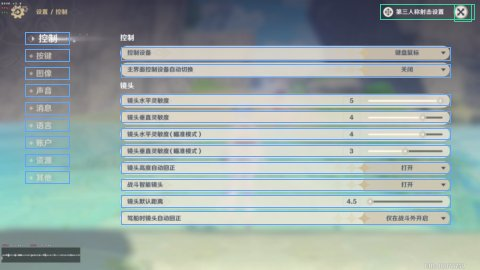
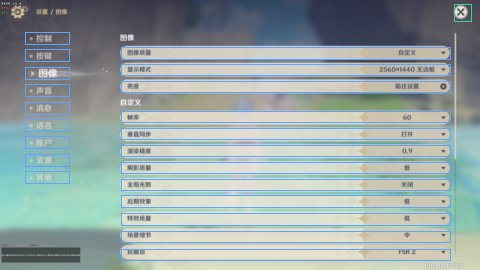
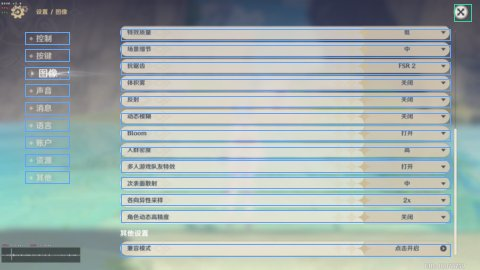
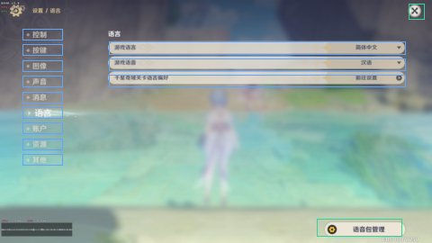
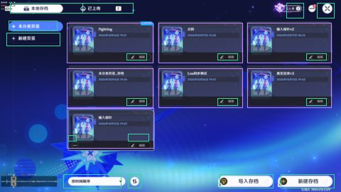
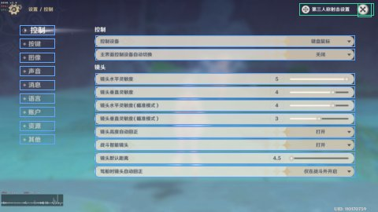
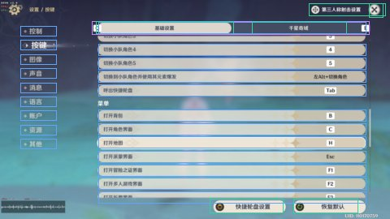
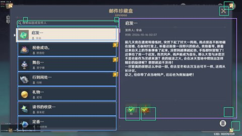
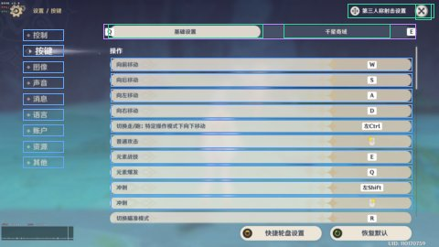
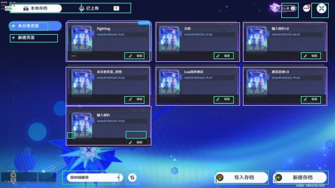
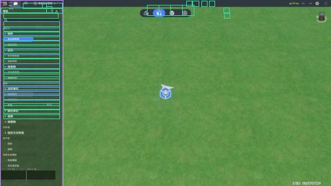
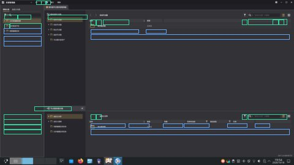
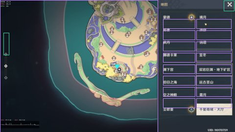
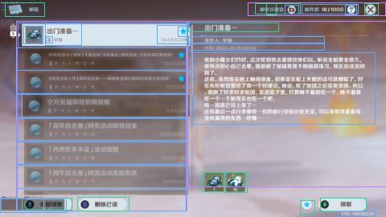
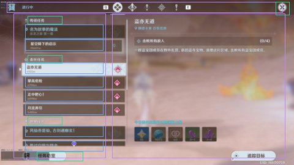
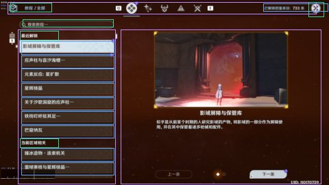
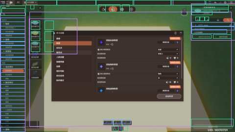
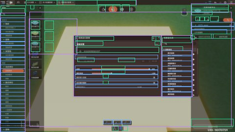
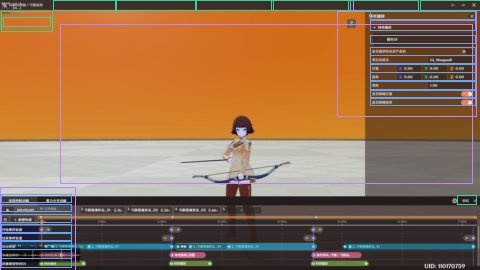
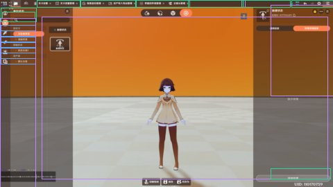
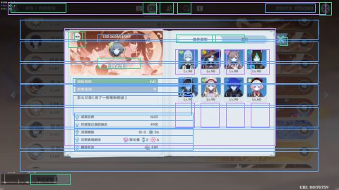
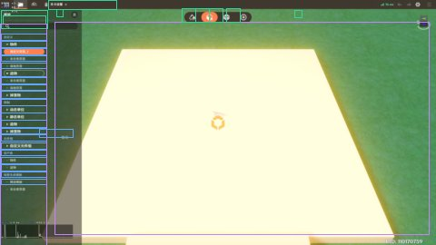
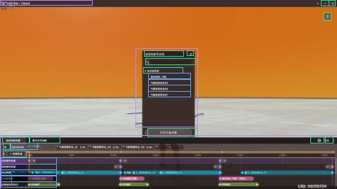
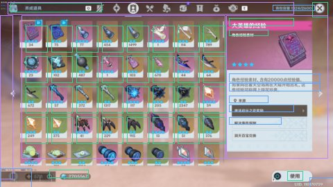
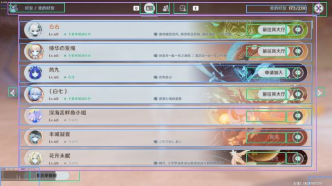